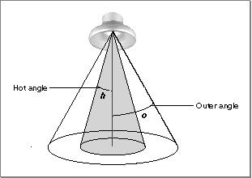
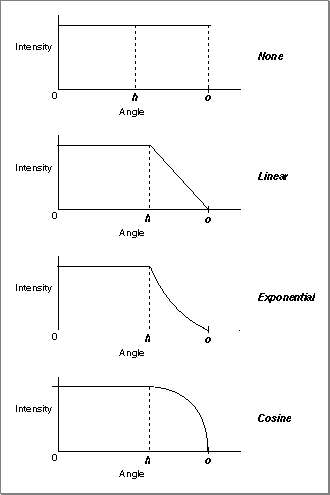

About Light Objects
A light object (or, more briefly, a light) is a type of QuickDraw 3D object that you can use to provide illumination to the surfaces in a scene. A light is of typeTQ3LightObject.In general, the illumination of a surface in a scene is affected by multiple light sources. As a result, a view is associated with a light group, which is simply a group of lights. To illuminate the objects in the scene, you need to create a light group and attach it to a view (for example, by calling
Q3LightGroup_NewandQ3View_SetLightGroup).QuickDraw 3D supports multiple light sources and multiple types of lights in a given scene. QuickDraw 3D defines four types of lights:
- Note
- If you do not attach a group of lights to a view, the results are renderer-specific.
All four types of lights share some basic properties, which are maintained in a light data structure, defined by the
- ambient lights
- directional lights
- point lights
- spot lights
TQ3LightDatadata structure.typedef struct TQ3LightData { TQ3Boolean isOn; float brightness; TQ3ColorRGB color; } TQ3LightData;These fields specify the brightness (that is, the intensity) and color of the light and the current state (active or inactive) of the light. You can turn a light on and off by toggling theisOnfield of a light data structure.As you will see, an ambient light is completely described by a light data structure. All other types of lights contain additional information, such as the location and direction of the light source. Those kinds of lights are defined by data structures that include a light data structure.
Ambient Light
Ambient light is an amount of light of a specific color that is added to the illumination of all surfaces in a scene. QuickDraw 3D supports at most one active source of ambient light per view, which is therefore called the ambient light object (or the ambient light). An ambient light has no location and cannot therefore cast shadows or become attenuated by distance of the light source from a surface. In effect, ambient light is light that is applied equally everywhere in a scene. In the absence of any other light sources, an ambient light illuminates a scene with a flat, uniform light. An ambient light is defined by theTQ3LightDatadata structure.Directional Lights
A directional light is a light source that emits parallel rays of light in a specific direction. You can think of a directional light as a light source that is infinitely far away from the surfaces it is illuminating. For example, for scenes on the surface of the Earth, the sun is effectively a directional light.A directional light has no location. As a result, you specify the direction of the light as a vector equivalent to the direction of the light. In addition, a directional light cannot suffer attenuation (that is, a loss of intensity over distance). It can, however, cast shadows.
- Note
- Directional lights are therefore sometimes also called infinite lights.
Point Lights
A point light is a light source that emits rays of light in all directions from a specific location. The illumination that a point light contributes to a surface depends on the basic properties of the light source (its intensity and color) together with the orientation of the surface and its distance from the light source.A point light can suffer attenuation, in which case objects closer to the light source receive more illumination than objects farther away. QuickDraw 3D allows you to specify one of several attenuation values that determine the precise amount by which the intensity of a point light decays over distance. For example, you can use the constant
kQ3AttenuationTypeInverseDistanceto have the intensity of a point light be inversely proportional to the distance between the illuminated surface and the light source. See "Light Attenuation Values" on page 8-9 for a complete list of the available attenuation values.Spot Lights
A spot light is a light source that emits a circular cone of light in a specific direction from a specific location. Figure 8-1 shows the geometry of a spot light. Every spot light has a hot angle and an outer angle that together define the shape of the cone of light and the amount of attenuation, if any, that occurs from the center of the cone to the outer edge of the cone.
A spot light's hot angle is the half-angle (specified in radians) from the center of the cone of light within which the light remains at constant full intensity. In Figure 8-1, h is the hot angle. A spot light's outer angle is the half angle (specified in radians) from the center of the cone to the edge of the cone. In Figure 8-1, o is the outer angle.The attenuation of the light's intensity from the edge of the hot angle to the edge of the outer angle is determined by the light's fall-off value. QuickDraw 3D allows you to specify no fall-off, a linear fall-off, an exponential fall-off, and a fall-off that is proportional to the cosine of the angle. The available fall-off algorithms are illustrated in Figure 8-2.
Figure 8-2 Fall-off algorithms

See "Light Fall-Off Values" on page 8-10 for a description of the constants you can use to specify a spot light's fall-off value.